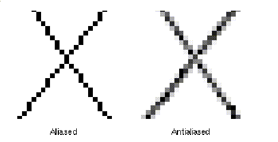
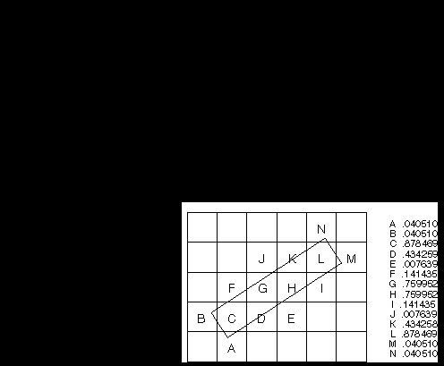
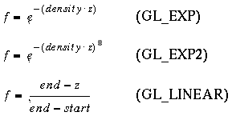
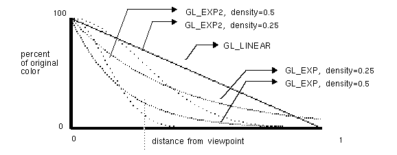

After reading this chapter, you'll be able to do the following:
Smooth jagged edges of lines and polygons with antialiasing
Create scenes with realistic atmospheric effects
Transform them so that they can be viewed from whatever perspective
you wish
Use display lists to maximize your program's efficiency
Specify how the geometric shapes in your scene should be colored and
shaded
Add lights and indicate how they should affect the shapes in your scene
"Antialiasing" explains this relatively subtle technique that alters
colors so that the edges of points, lines, and polygons appear smooth rather
than angular and jagged.
"Fog" describes how to create the illusion of depth by computing the color values of an object based on distance from the viewpoint. Thus, objects that are far away appear to fade into the background, just as they do in real life.
Without blending, each new fragment overwrites any existing color values in the framebuffer, as though the fragment is opaque. With blending, you can control how much of the existing color value should be combined with the new fragment's value. Thus, you can use alpha blending to create a translucent fragment, one that lets some of the previously stored color value "show through." Color blending lies at the heart of techniques such as transparency, digital compositing, and painting.
Alpha values aren't specified in color-index mode. Thus, blending operations aren't performed in color-index mode
The most natural way for you to think of blending operations is to view the RGB components of a fragment as representing its color, and the alpha component as representing opacity. Thus, transparent or translucent surfaces have lower opacity than opaque ones. For example, if you're viewing an object through green glass, the color you see is partly green from the glass and partly the color of the object. The percentage varies depending on the transmission properties of the glass: If the glass transmits 80 percent of the light that strikes it (that is, has an opacity of 20 percent), the color you see is a combination of 20 percent glass color and 80 percent of the color of the object behind it. You can easily imagine situations with multiple translucent surfaces. If you look at an automobile, for instance, its interior has one piece of glass between it and your viewpoint; some objects behind the automobile are visible through two pieces of glass.
(RsSr+RdDr, GsSg+GdDg, BsSb+BdDb, AsSa+AdDa)
Each component of this quadruplet is eventually clamped to [0,1].
Now let's look at how the source and destination blending factors are generated. You use glBlendFunc() to supply two constants: one that specifies how the source factor should be computed, and one that indicates how the destination factor should be computed. Also, to have blending take effect, you need to enable it:
glEnable(GL_BLEND);Use glDisable() with GL_BLEND to disable blending. Also, note that using the constants GL_ONE (source) and GL_ZERO (destination) gives the same results as when blending is disabled; these values are the default.void glBlendFunc(GLenum sfactor, GLenum dfactor)
Controls how color values in the fragment being processed (the source) are combined with those already stored in the framebuffer (the destination). The argument sfactor indicates how to compute a source blending factor; dfactor indicates how to compute a destination blending factor. The possible values for these arguments are explained in Table 7-1 . The blend factors are assumed to lie in the range [0,1]; after the color values in the source and destination are combined, they're clamped to the range [0,1].
In Table 7-1 , the RGBA values of the source and destination are indicated with the subscripts s and d, respectively. Also, division of an RGBA quadruplet by a scalar means dividing each component by that value. Similarly, subtraction of quadruplets means subtracting them componentwise. The Relevant Factor column indicates whether the corresponding constant can be used to specify the source or destination blend factor.
| Constant | Relevant Factor | Computed Blend Factor |
|---|---|---|
| GL_ZERO | source or destination | (0, 0, 0, 0) |
| GL_ONE | source or destination | (1, 1, 1, 1) |
| GL_DST_COLOR | source | (Rd, Gd, Bd, Ad) |
| GL_SRC_COLOR | destination | (Rs, Gs, Bs, As) |
| GL_ONE_MINUS_DST_COLOR | source | (1, 1, 1, 1)-(Rd, Gd, Bd, Ad) |
| GL_ONE_MINUS_SRC_COLOR | destination | (1, 1, 1, 1)-(Rs, Gs, Bs, As) |
| GL_SRC_ALPHA | source or destination | (As, As, As, As) |
| GL_ONE_MINUS_SRC_ALPH A | source or destination | (1, 1, 1, 1)-(As, As, As, As) |
| GL_DST_ALPHA | source or destination | (Ad, Ad, Ad, Ad) |
| GL_ONE_MINUS_DST_ALPH A | source or destination | (1, 1, 1, 1)-(Ad, Ad, Ad, Ad) |
| GL_SRC_ALPHA_SATURATE | source | (f, f, f, 1); f=min(As, 1-Ad) |
To blend three different images equally, set the destination factor
to GL_ONE and the source factor to GL_SRC_ALPHA. Draw each of the images
with an alpha equal to 0.3333333. With this technique, each image is only
one-third of its original brightness, which is noticeable where the images
don't overlap.
Suppose you're writing a paint program, and you want to have a brush
that gradually adds color so that each brush stroke blends in a little
more color with whatever is currently in the image (say 10 percent color
with 90 percent image on each pass). To do this, draw the image of the
brush with alpha of 10 percent and use GL_SRC_ALPHA (source) and GL_ONE_MINUS_SRC_ALPHA
(destination). (Note that you can vary the alphas across the brush to make
the brush add more of its color in the middle and less on the edges, for
an antialiased brush shape. See "Antialiasing." ) Similarly, erasers can
be implemented by setting the eraser color to the background color.
The blending functions that use the source or destination colors - GL_DST_COLOR
or GL_ONE_MINUS_DST_COLOR for the source factor and GL_SRC_COLOR or GL_ONE_MINUS_SRC_COLOR
for the destination factor - effectively allow you to modulate each color
component individually. This operation is equivalent to applying a simple
filter - for example, multiplying the red component by 80 percent, the
green component by 40 percent, and the blue component by 72 percent would
simulate viewing the scene through a photographic filter that blocks 20
percent of red light, 60 percent of green, and 28 percent of blue.
Suppose you want to draw a picture composed of three translucent surfaces, some obscuring others and all over a solid background. Assume the farthest surface transmits 80 percent of the color behind it, the next transmits 40 percent, and the closest transmits 90 percent. To compose this picture, draw the background first with the default source and destination factors, and then change the blending factors to GL_SRC_ALPHA (source) and GL_ONE_MINUS_SRC_ALPHA (destination). Next, draw the farthest surface with an alpha of 0.2, then the middle surface with an alpha of 0.6, and finally the closest surface with an alpha of 0.1.
Advanced
If your system has alpha planes, you can render objects one at a time (including their alpha values), read them back, and then perform interesting matting or compositing operations with the fully rendered objects. See "Compositing 3D Rendered Images" by Tom Duff, SIGGRAPH 1985 Proceedings, p. 41-44, for examples of this technique. Note that objects used for picture composition can come from any source - they can be rendered using OpenGL commands, rendered using techniques such as ray-tracing or radiosity that are implemented in another graphics library, or obtained by scanning in existing images.
Advanced
You can create the effect of a nonrectangular raster image by assigning different alpha values to individual fragments in the image. Assign an alpha of 0 to each "invisible" fragment, and an alpha of 1.0 to each opaque fragment. For example, you can draw a polygon in the shape of a tree and apply a texture map of foliage; the viewer can see through parts of the rectangular texture that aren't part of the tree if you've assigned them alpha values of 0. This method, sometimes called billboarding, is much faster than creating the tree out of three-dimensional polygons. An example of this technique is shown in Figure 7-1 : The tree is a single rectangular polygon that can be rotated about the center of the trunk, as shown by the outlines, so that it's always facing the viewer. See "Modulating and Blending" for more information about blending textures.
Figure 7-1 : Creating a Nonrectangular Raster Image
Example 7-1 : A Blending Example: alpha.c
#include <GL/gl.h>
#include <GL/glu.h>
#include "aux.h"
void myinit(void)
{
glEnable(GL_BLEND);
glBlendFunc(GL_SRC_ALPHA, GL_ONE_MINUS_SRC_ALPHA);
glShadeModel(GL_FLAT);
glClearColor(0.0, 0.0, 0.0, 0.0);
}
void display(void)
{
glClear(GL_COLOR_BUFFER_BIT);
glColor4f(1.0, 1.0, 0.0, 0.75);
glRectf(0.0, 0.0, 0.5, 1.0);
glColor4f(0.0, 1.0, 1.0, 0.75);
glRectf(0.0, 0.0, 1.0, 0.5);
/* draw colored polygons in reverse order in upper right */
glColor4f (0.0, 1.0, 1.0, 0.75);
glRectf (0.5, 0.5, 1.0, 1.0);
glColor4f (1.0, 1.0, 0.0, 0.75);
glRectf (0.5, 0.5, 1.0, 1.0);
glFlush();
}
void myReshape(GLsizei w, GLsizei h)
{
glViewport(0, 0, w, h);
glMatrixMode(GL_PROJECTION);
glLoadIdentity();
if (w <= h)
gluOrtho2D (0.0, 1.0, 0.0, 1.0*(GLfloat)h/(GLfloat)w);
else
gluOrtho2D (0.0, 1.0*(GLfloat)w/(GLfloat)h, 0.0, 1.0);
glMatrixMode(GL_MODELVIEW);
}
int main(int argc, char** argv)
{
auxInitDisplayMode (AUX_SINGLE | AUX_RGBA);
auxInitPosition (0, 0, 500, 500);
auxInitWindow (argv[0]);
myinit();
auxReshapeFunc (myReshape);
auxMainLoop(display);
}
As you probably expected, the order in which the rectangles are drawn affects
the resulting colors. In the lower left quadrant, the cyan rectangle becomes
the source fragment that's blended with the yellow rectangle, which is
already in the framebuffer and thus is the destination. In the upper right
quadrant, the yellow rectangle is the source and the cyan one the destination.
Because the alpha values are all 0.75, the actual blending factors become
0.75 for the source and 1.0 - 0.75 = 0.25 for the destination. In other
words, the source rectangle is somewhat translucent, but it has more effect
on the final color than the destination rectangle. As a result, the lower
left quadrant is light cyan, and the upper left one is light yellow. If
you do the arithmetic, you'll find that the lower left RGB color is (0.25,
1.0, 0.75) and the upper right color is (0.75, 1.0, 0.25).
Typically, you want to render both opaque and translucent objects in the same scene, and you want to use the depth buffer to perform hidden-surface removal for objects that lie behind the opaque objects. If an opaque object hides either a translucent object or another opaque object, you want the depth buffer to eliminate the more distant object. If the translucent object is closer, however, you want to blend it with the opaque object. You can generally figure out the correct order to draw the polygons if everything in the scene is stationary, but the problem can easily become too hard if either the viewpoint or the object is moving.
The solution is to enable depth-buffering but make the depth buffer read-only while drawing the translucent objects. First you draw all the opaque objects, with the depth buffer in normal operation. Then, you preserve these depth values by making the depth buffer read-only. When the translucent objects are drawn, their depth values are still compared to the values established by the opaque objects, so they aren't drawn if they're behind the opaque ones. If they're closer to the viewpoint, however, they don't eliminate the opaque objects, since the depth-buffer values can't change. Instead, they're blended with the opaque objects. To control whether the depth buffer is writable, use glDepthMask(); if you pass GL_FALSE as the argument, the buffer becomes read-only, whereas GL_TRUE restores the normal, writable operation.
Example 7-2 demonstrates how to use this method to draw opaque and translucent three-dimensional objects. In the program, pressing the left mouse button calls toggleviewpoint(), which changes the viewpoint position, and thus the ordering of an opaque torus and a translucent cylinder. Keep in mind that this solution is exact only when no pixel in the framebuffer is drawn more than once by a transparent object. If transparent objects overlap, resulting in multiple blended renderings to individual pixels, this solution is only a useful approximation to the correct (sorted) result.
Example 7-2 : Three-Dimensional Blending: alpha3D.c
#include <GL/gl.h>
#include <GL/glu.h>
#include "aux.h"
void myinit(void)
{
GLfloat mat_ambient[] = { 0.0, 0.0, 0.0, 0.15 };
GLfloat mat_specular[] = { 1.0, 1.0, 1.0, 0.15 };
GLfloat mat_shininess[] = { 15.0 };
glMaterialfv(GL_FRONT, GL_AMBIENT, mat_ambient);
glMaterialfv(GL_FRONT, GL_SPECULAR, mat_specular);
glMaterialfv(GL_FRONT, GL_SHININESS, mat_shininess);
glEnable(GL_LIGHTING);
glEnable(GL_LIGHT0);
glDepthFunc(GL_LEQUAL);
glEnable(GL_DEPTH_TEST);
}
GLboolean eyePosition = GL_FALSE;
void toggleEye(AUX_EVENTREC *event)
{
if (eyePosition)
eyePosition = GL_FALSE;
else
eyePosition = GL_TRUE;
}
void display(void)
{
GLfloat position[] = { 0.0, 0.0, 1.0, 1.0 };
GLfloat mat_torus[] = { 0.75, 0.75, 0.0, 1.0 };
GLfloat mat_cylinder[] = { 0.0, 0.75, 0.75, 0.15 };
glClear(GL_COLOR_BUFFER_BIT | GL_DEPTH_BUFFER_BIT);
glLightfv(GL_LIGHT0, GL_POSITION, position);
glPushMatrix();
if (eyePosition)
gluLookAt(0.0, 0.0, 9.0, 0.0, 0.0, 0.0, 0.0,
1.0, 0.0);
else
gluLookAt(0.0, 0.0, -9.0, 0.0, 0.0, 0.0, 0.0,
1.0, 0.0);
glPushMatrix();
glTranslatef(0.0, 0.0, 1.0);
glMaterialfv(GL_FRONT, GL_DIFFUSE, mat_torus);
auxSolidTorus(0.275, 0.85);
glPopMatrix();
glEnable(GL_BLEND);
glDepthMask(GL_FALSE);
glBlendFunc(GL_SRC_ALPHA, GL_ONE);
glMaterialfv(GL_FRONT, GL_DIFFUSE, mat_cylinder);
glTranslatef(0.0, 0.0, -1.0);
auxSolidCylinder(1.0, 2.0);
glDepthMask(GL_TRUE);
glDisable(GL_BLEND);
glPopMatrix();
glFlush();
}
void myReshape(GLsizei w, GLsizei h)
{
glViewport(0, 0, w, h);
glMatrixMode(GL_PROJECTION);
glLoadIdentity();
gluPerspective(30.0, (GLfloat) w/(GLfloat) h, 1.0, 20.0);
glMatrixMode(GL_MODELVIEW);
glLoadIdentity();
}
int main(int argc, char** argv)
{
auxInitDisplayMode(AUX_SINGLE | AUX_RGBA | AUX_DEPTH);
auxInitPosition(0, 0, 500, 500);
auxInitWindow(argv[0]);
auxMouseFunc(AUX_LEFTBUTTON, AUX_MOUSEDOWN, toggleEye);
myinit();
auxReshapeFunc(myReshape);
auxMainLoop(display);
}

Figure 7-2 : Aliased and Antialiased Lines
Figure 7-2 shows how a diagonal line one pixel wide covers more of some pixel squares than others. In fact, when performing antialiasing, OpenGL calculates a coverage value for each fragment based on the fraction of the pixel square on the screen that it would cover. The figure shows these coverage values for the line. In RGBA mode, OpenGL multiplies the fragment's alpha value by its coverage. You can then use the resulting alpha value to blend the fragment with the corresponding pixel already in the framebuffer. In color-index mode, OpenGL sets the least significant 4 bits of the color index based on the fragment's coverage (0000 for no coverage and 1111 for complete coverage). It's up to you to load your color map and apply it appropriately to take advantage of this coverage information.

Figure 7-3 : Determining Coverage Values
The details of calculating coverage values are complex, difficult to specify in general, and in fact may vary slightly depending on your particular implementation of OpenGL. You can use the glHint() command to exercise some control over the trade-off between image quality and speed, but not all implementations will take the hint. void glHint(GLenum target, GLenum hint);
Controls certain aspects of OpenGL behavior. The target parameter indicates which behavior is to be controlled; its possible values are shown in Table 7-2 . The hint parameter can be GL_FASTEST to indicate that the most efficient option should be chosen, GL_NICEST to indicate the highest-quality option, or GL_DONT_CARE to indicate no preference. The interpretation of hints is implementation-dependent; an implementation can ignore them entirely.
For more information about the relevant topics, see "Antialiasing" for the details on sampling and "Fog" for details on fog. The GL_PERSPECTIVE_CORRECTION_HINT parameter refers to how color values and texture coordinates are interpolated across a primitive: either linearly in screen space (a relatively simple calculation) or in a perspective-correct manner (which requires more computation). Often, systems perform linear color interpolation because the results, while not technically correct, are visually acceptable; textures, however, in most cases require perspective-correct interpolation to be visually acceptable. Thus, an implementation can choose to use this parameter to control the method used for interpolation. Perspective projection is discussed in Chapter 3 , color is discussed in Chapter 5 , and texture mapping is discussed in Chapter 9 .
| Parameter | Meaning |
|---|---|
| GL_POINT_SMOOTH_HINT, GL_LINE_SMOOTH_HINT, GL_POLYGON_SMOOTH_HINT | Specify the desired sampling quality of points, lines, or polygons during antialiasing operations |
| GL_FOG_HINT | Specifies whether fog calculations are done per pixel (GL_NICEST) or per vertex (GL_FASTEST) |
| GL_PERSPECTIVE_CORRECTION_HINT | Specifies the desired quality of color and texture-coordinate interpolation |
Example 7-3 : An Antialiased Wireframe Icosahedron: anti.c
#include <GL/gl.h>
#include <GL/glu.h>
#include "aux.h"
void myinit(void)
{
GLfloat values[2];
glGetFloatv(GL_LINE_WIDTH_GRANULARITY, values);
printf("GL_LINE_WIDTH_GRANULARITY value is %3.1f\n",
values[0]);
glGetFloatv(GL_LINE_WIDTH_RANGE, values);
printf("GL_LINE_WIDTH_RANGE values are %3.1f %3.1f\n",
values[0], values[1]);
glEnable(GL_LINE_SMOOTH);
glEnable(GL_BLEND);
glBlendFunc(GL_SRC_ALPHA, GL_ONE_MINUS_SRC_ALPHA);
glHint(GL_LINE_SMOOTH_HINT, GL_DONT_CARE);
glLineWidth(1.5);
glShadeModel(GL_FLAT);
glClearColor(0.0, 0.0, 0.0, 0.0);
glDepthFunc(GL_LEQUAL);
glEnable(GL_DEPTH_TEST);
}
void display(void)
{
glClear(GL_COLOR_BUFFER_BIT | GL_DEPTH_BUFFER_BIT);
glColor4f(1.0, 1.0, 1.0, 1.0);
auxWireIcosahedron(1.0);
glFlush();
}
void myReshape(GLsizei w, GLsizei h)
{
glViewport(0, 0, w, h);
glMatrixMode(GL_PROJECTION);
glLoadIdentity();
gluPerspective(45.0, (GLfloat) w/(GLfloat) h, 3.0, 5.0);
glMatrixMode(GL_MODELVIEW);
glLoadIdentity();
glTranslatef(0.0, 0.0, -4.0);
}
int main(int argc, char** argv)
{
auxInitDisplayMode(AUX_SINGLE | AUX_RGBA | AUX_DEPTH);
auxInitPosition(0, 0, 400, 400);
auxInitWindow(argv[0]);
myinit();
auxReshapeFunc(myReshape);
auxMainLoop(display);
}
Example 7-4 : Antialiasing in Color-Index Mode: antiindex.c
#include <GL/gl.h>
#include <GL/glu.h>
#include "aux.h"
#define RAMPSIZE 16
#define RAMPSTART 32
void myinit(void)
{
int i;
for (i = 0; i < RAMPSIZE; i++) {
GLfloat shade;
shade = (GLfloat) i/(GLfloat) RAMPSIZE;
auxSetOneColor(RAMPSTART+(GLint)i, shade, shade, shade);
}
glEnable (GL_LINE_SMOOTH);
glHint (GL_LINE_SMOOTH_HINT, GL_DONT_CARE);
glLineWidth (1.5);
glClearIndex ((GLfloat) RAMPSTART);
glShadeModel(GL_FLAT);
glDepthFunc(GL_LEQUAL);
glEnable(GL_DEPTH_TEST);
}
void display(void)
{
glClear(GL_COLOR_BUFFER_BIT | GL_DEPTH_BUFFER_BIT);
glIndexi(RAMPSTART);
auxWireIcosahedron(1.0);
glFlush();
}
void myReshape(GLsizei w, GLsizei h)
{
glViewport(0, 0, w, h);
glMatrixMode(GL_PROJECTION);
glLoadIdentity();
gluPerspective (45.0, (GLfloat) w/(GLfloat) h, 3.0, 5.0);
glMatrixMode(GL_MODELVIEW);
glLoadIdentity ();
glTranslatef (0.0, 0.0, -4.0);
}
int main(int argc, char** argv)
{
auxInitDisplayMode (AUX_SINGLE | AUX_INDEX | AUX_DEPTH);
auxInitPosition (0, 0, 400, 400);
auxInitWindow (argv[0]);
myinit();
auxReshapeFunc (myReshape);
auxMainLoop(display);
}
Since the color ramp goes from the background color to the object's color,
the antialiased object looks correct only when it's drawn on top of the
background. If the antialiased object is drawn on top of another object,
places where the objects intersect will have the wrong colors, unless you've
constructed your color ramps taking this into consideration. To get the
best result, use the depth buffer to ensure that the pixel colors correspond
to the "nearest" objects. In RGBA mode, however, the colors of both objects
are blended, so the results look more natural. Thus, you typically don't
use the depth buffer when rendering a scene consisting of antialiased points
and lines.
Advanced
The trick described in "Three-Dimensional Blending with the Depth Buffer" can also be used to mix antialiased points and lines with aliased, depth-buffered polygons. To do this, draw the polygons first, then make the depth buffer read-only and draw the points and lines. The points and lines will intersect nicely with each other but will be obscured by nearer polygons.
If you draw your polygons as points at the vertices or as outlines - that is, by passing GL_POINT or GL_LINE to glPolygonMode() - point or line antialiasing is applied, if enabled as described earlier. The rest of this section addresses polygon antialiasing when you're using GL_FILL as the polygon mode.
In theory, you can antialias polygons in either RGBA or color-index mode. However, object intersections affect polygon antialiasing more than they affect point or line antialiasing, so rendering order and blending accuracy become more critical. In fact, they're so critical that if you're antialiasing more than one polygon, you need to order the polygons from front to back and then use glBlendFunc() with GL_SRC_ALPHA_SATURATE for the source factor and GL_ONE for the destination factor. Thus, antialiasing polygons in color-index mode normally isn't practical.
To antialias polygons in RGBA mode, you use the alpha value to represent coverage values of polygon edges. You need to enable polygon antialiasing by passing GL_POLYGON_SMOOTH to glEnable(). This causes pixels on the edges of the polygon to be assigned fractional alpha values based on their coverage, as though they were lines being antialiased. Also, if you desire, you can supply a value for GL_POLYGON_SMOOTH_HINT.
Now you need to blend overlapping edges appropriately. First, turn off the depth buffer so that you have control over how overlapping pixels are drawn. Then set the blending factors to GL_SRC_ALPHA_SATURATE (source) and GL_ONE (destination). With this specialized blending function, the final color is the sum of the destination color and the scaled source color; the scale factor is the smaller of either the incoming source alpha value or one minus the destination alpha value. This means that for a pixel with a large alpha value, successive incoming pixels have little effect on the final color because one minus the destination alpha is almost zero. With this method, a pixel on the edge of a polygon might be blended eventually with the colors from another polygon that's drawn later. Finally, you need to sort all the polygons in your scene so that they're ordered from front to back before drawing them.
Example 7-5 shows how to antialias filled polygons; clicking the left mouse button toggles the antialiasing on and off. Note that backward-facing polygons are culled and that the alpha values in the color buffer are cleared to zero before any drawing. (Your color buffer must store alpha values for this technique to work correctly.)
Example 7-5 : Antialiasing Filled Polygons: antipoly.c
#include <GL/gl.h>
#include <GL/glu.h>
#include "aux.h"
GLboolean polySmooth;
void myinit(void)
{
GLfloat mat_ambient[] = { 0.0, 0.0, 0.0, 1.00 };
GLfloat mat_specular[] = { 1.0, 1.0, 1.0, 1.00 };
GLfloat mat_shininess[] = { 15.0 };
glMaterialfv(GL_FRONT, GL_AMBIENT, mat_ambient);
glMaterialfv(GL_FRONT, GL_SPECULAR, mat_specular);
glMaterialfv(GL_FRONT, GL_SHININESS, mat_shininess);
glEnable (GL_LIGHTING);
glEnable (GL_LIGHT0);
glEnable (GL_BLEND);
glCullFace (GL_BACK);
glEnable (GL_CULL_FACE);
glEnable (GL_POLYGON_SMOOTH);
polySmooth = GL_TRUE;
glClearColor (0.0, 0.0, 0.0, 0.0);
}
void toggleSmooth (AUX_EVENTREC *event)
{
if (polySmooth) {
polySmooth = GL_FALSE;
glDisable (GL_BLEND);
glDisable (GL_POLYGON_SMOOTH);
glEnable (GL_DEPTH_TEST);
}
else {
polySmooth = GL_TRUE;
glEnable (GL_BLEND);
glEnable (GL_POLYGON_SMOOTH);
glDisable (GL_DEPTH_TEST);
}
}
void display(void)
{
GLfloat position[] = { 0.0, 0.0, 1.0, 0.0 };
GLfloat mat_cube1[] = { 0.75, 0.75, 0.0, 1.0 };
GLfloat mat_cube2[] = { 0.0, 0.75, 0.75, 1.0 };
if (polySmooth)
glClear (GL_COLOR_BUFFER_BIT);
else
glClear (GL_COLOR_BUFFER_BIT | GL_DEPTH_BUFFER_BIT);
glPushMatrix ();
glTranslatef (0.0, 0.0, -8.0);
glLightfv (GL_LIGHT0, GL_POSITION, position);
glBlendFunc (GL_SRC_ALPHA_SATURATE, GL_ONE);
glPushMatrix ();
glRotatef (30.0, 1.0, 0.0, 0.0);
glRotatef (60.0, 0.0, 1.0, 0.0);
glMaterialfv(GL_FRONT, GL_DIFFUSE, mat_cube1);
auxSolidCube (1.0, 1.0, 1.0);
glPopMatrix ();
glTranslatef (0.0, 0.0, -2.0);
glMaterialfv(GL_FRONT, GL_DIFFUSE, mat_cube2);
glRotatef (30.0, 0.0, 1.0, 0.0);
glRotatef (60.0, 1.0, 0.0, 0.0);
auxSolidCube (1.0);
glPopMatrix ();
glFlush ();
}
void myReshape(GLsizei w, GLsizei h)
{
glViewport(0, 0, w, h);
glMatrixMode(GL_PROJECTION);
glLoadIdentity();
gluPerspective(30.0, (GLfloat) w/(GLfloat) h, 1.0, 20.0);
glMatrixMode(GL_MODELVIEW);
}
int main(int argc, char** argv)
{
auxInitDisplayMode (AUX_SINGLE | AUX_RGBA | AUX_DEPTH);
auxInitPosition (0, 0, 200, 200);
auxInitWindow (argv[0]);
auxMouseFunc (AUX_LEFTBUTTON, AUX_MOUSEDOWN, toggleSmooth);
myinit();
auxReshapeFunc (myReshape);
auxMainLoop(display);
}
When fog is enabled, objects that are farther from the viewpoint begin to fade into the fog color. You can control the density of the fog, which determines the rate at which objects fade as the distance increases, as well as the fog's color. Fog is available in both RGBA and color-index modes, although the calculations are slightly different in the two modes. Since fog is applied after matrix transformations, lighting, and texturing are performed, it affects transformed, lit, and textured objects. Note that with large simulation programs, fog can improve performance, since you can choose not to draw objects that are too fogged to be visible.
Example 7-6 : Five Fogged Teapots in RGBA Mode: fog.c
#include <GL/gl.h>
#include <GL/glu.h>
#include <math.h>
#include "aux.h"
GLint fogMode;
void cycleFog (AUX_EVENTREC *event)
{
if (fogMode == GL_EXP) {
fogMode = GL_EXP2;
printf ("Fog mode is GL_EXP2\n");
}
else if (fogMode == GL_EXP2) {
fogMode = GL_LINEAR;
printf ("Fog mode is GL_LINEAR\n");
glFogf (GL_FOG_START, 1.0);
glFogf (GL_FOG_END, 5.0);
}
else if (fogMode == GL_LINEAR) {
fogMode = GL_EXP;
printf ("Fog mode is GL_EXP\n");
}
glFogi (GL_FOG_MODE, fogMode);
}
void myinit(void)
{
GLfloat position[] = { 0.0, 3.0, 3.0, 0.0 };
GLfloat local_view[] = { 0.0 };
glEnable(GL_DEPTH_TEST);
glDepthFunc(GL_LEQUAL);
glLightfv(GL_LIGHT0, GL_POSITION, position);
glLightModelfv(GL_LIGHT_MODEL_LOCAL_VIEWER, local_view);
glFrontFace (GL_CW);
glEnable(GL_LIGHTING);
glEnable(GL_LIGHT0);
glEnable(GL_AUTO_NORMAL);
glEnable(GL_NORMALIZE);
glEnable(GL_FOG);
{
GLfloat density;
GLfloat fogColor[4] = {0.5, 0.5, 0.5, 1.0};
fogMode = GL_EXP;
glFogi (GL_FOG_MODE, fogMode);
glFogfv (GL_FOG_COLOR, fogColor);
glFogf (GL_FOG_DENSITY, 0.35);
glHint (GL_FOG_HINT, GL_DONT_CARE);
glClearColor(0.5, 0.5, 0.5, 1.0);
}
}
void renderRedTeapot (GLfloat x, GLfloat y, GLfloat z)
{
float mat[3];
glPushMatrix();
glTranslatef (x, y, z);
mat[0] = 0.1745; mat[1] = 0.01175; mat[2] = 0.01175;
glMaterialfv (GL_FRONT, GL_AMBIENT, mat);
mat[0] = 0.61424; mat[1] = 0.04136; mat[2] = 0.04136;
glMaterialfv (GL_FRONT, GL_DIFFUSE, mat);
mat[0] = 0.727811; mat[1] = 0.626959; mat[2] = 0.626959;
glMaterialfv (GL_FRONT, GL_SPECULAR, mat);
glMaterialf (GL_FRONT, GL_SHININESS, 0.6*128.0);
auxSolidTeapot(1.0);
glPopMatrix();
}
void display(void)
{
glClear(GL_COLOR_BUFFER_BIT | GL_DEPTH_BUFFER_BIT);
renderRedTeapot (-4.0, -0.5, -1.0);
renderRedTeapot (-2.0, -0.5, -2.0);
renderRedTeapot (0.0, -0.5, -3.0);
renderRedTeapot (2.0, -0.5, -4.0);
renderRedTeapot (4.0, -0.5, -5.0);
glFlush();
}
void myReshape(GLsizei w, GLsizei h)
{
glViewport(0, 0, w, h);
glMatrixMode(GL_PROJECTION);
glLoadIdentity();
if (w <= (h*3))
glOrtho (-6.0, 6.0, -2.0*((GLfloat) h*3)/(GLfloat) w,
2.0*((GLfloat) h*3)/(GLfloat) w, 0.0, 10.0);
else
glOrtho (-6.0*(GLfloat) w/((GLfloat) h*3),
6.0*(GLfloat) w/((GLfloat) h*3), -2.0, 2.0, 0.0, 10.0);
glMatrixMode(GL_MODELVIEW);
glLoadIdentity ();
}
int main(int argc, char** argv)
{
auxInitDisplayMode (AUX_SINGLE | AUX_RGBA | AUX_DEPTH);
auxInitPosition (0, 0, 450, 150);
auxInitWindow (argv[0]);
auxMouseFunc (AUX_LEFTBUTTON, AUX_MOUSEDOWN, cycleFog);
myinit();
auxReshapeFunc (myReshape);
auxMainLoop(display);
}

where z is the eye-coordinate distance between the viewpoint and the fragment center. The values for density, start, and end are all specified with glFog*(). The f factor is used differently, depending on whether you're in RGBA mode or color-index mode, as explained in the next subsections. void glFog{if}{v}(GLenum pname, TYPE param);
Sets the parameters and function for calculating fog. If pname is GL_FOG_MODE, then param is either GL_EXP (the default), GL_EXP2, or GL_LINEAR to select one of the three fog factors. If pname is GL_FOG_DENSITY, GL_FOG_START, or GL_FOG_END, then param is (or points to, with the vector version of the command) a value for density, start, or end in the equations. (The default values are 1, 0, and 1, respectively.) In RGBA mode, pname can be GL_FOG_COLOR, in which case param points to four values that specify the fog's RGBA color values. The corresponding value for pname in color-index mode is GL_FOG_INDEX, for which param is a single value specifying the fog's color index.
Figure 7-4 plots the fog-density equations for various values of the parameters. You can use linear fog to achieve a depth-cuing effect, as shown in Figure J-2 .

Figure 7-4 : Fog-Density Equations
C = f Ci + (1 - f ) Cf
where Ci represents the incoming fragment's RGBA values and Cf the fog-color values assigned with GL_FOG_COLOR.
I = Ii + (1 - f ) If
where Ii is the incoming fragment's color index and If is the fog's color index as specified with GL_FOG_INDEX.
To use fog in color-index mode, you have to load appropriate values in a color ramp. The first color in the ramp is the color of the object without fog, and the last color in the ramp is the color of the completely fogged object. You probably want to use glClearIndex() to initialize the background color index so that it corresponds to the last color in the ramp; this way, totally fogged objects blend into the background. Similarly, before objects are drawn, you should call glIndex*() and pass in the index of the first color in the ramp (the unfogged color). Finally, to apply fog to different colored objects in the scene, you need to create several color ramps, and call glIndex*() before each object is drawn to set the current color index to the start of each color ramp. Example 7-7 illustrates how to initialize appropriate conditions and then apply fog in color-index mode.
Example 7-7 : Using Fog in Color-Index Mode: fogindex.c
#include <GL/gl.h>
#include <GL/glu.h>
#include "aux.h"
#define NUMCOLORS 32
#define RAMPSTART 16
void myinit(void)
{
int i;
glEnable(GL_DEPTH_TEST);
glDepthFunc(GL_LEQUAL);
for (i = 0; i < NUMCOLORS; i++) {
GLfloat shade;
shade = (GLfloat) (NUMCOLORS-i)/(GLfloat) NUMCOLORS;
auxSetOneColor (16 + i, shade, shade, shade);
}
glEnable(GL_FOG);
glFogi (GL_FOG_MODE, GL_LINEAR);
glFogi (GL_FOG_INDEX, NUMCOLORS);
glFogf (GL_FOG_START, 0.0);
glFogf (GL_FOG_END, 4.0);
glHint (GL_FOG_HINT, GL_NICEST);
glClearIndex((GLfloat) (NUMCOLORS+RAMPSTART-1));
}
void display(void)
{
glClear(GL_COLOR_BUFFER_BIT | GL_DEPTH_BUFFER_BIT);
glPushMatrix ();
glTranslatef (-1.0, -1.0, -1.0);
glRotatef (-90.0, 1.0, 0.0, 0.0);
glIndexi (RAMPSTART);
auxSolidCone(1.0, 2.0);
glPopMatrix ();
glPushMatrix ();
glTranslatef (0.0, -1.0, -2.25);
glRotatef (-90.0, 1.0, 0.0, 0.0);
glIndexi (RAMPSTART);
auxSolidCone(1.0, 2.0);
glPopMatrix ();
glPushMatrix ();
glTranslatef (1.0, -1.0, -3.5);
glRotatef (-90.0, 1.0, 0.0, 0.0);
glIndexi (RAMPSTART);
auxSolidCone(1.0, 2.0);
glPopMatrix ();
glFlush();
}
void myReshape(GLsizei w, GLsizei h)
{
glViewport(0, 0, w, h);
glMatrixMode(GL_PROJECTION);
glLoadIdentity();
if (w <= h)
glOrtho (-2.0, 2.0, -2.0*(GLfloat)h/(GLfloat)w,
2.0*(GLfloat)h/(GLfloat)w, 0.0, 10.0);
else
glOrtho (-2.0*(GLfloat)w/(GLfloat)h,
2.0*(GLfloat)w/(GLfloat)h, -2.0, 2.0, 0.0, 10.0);
glMatrixMode(GL_MODELVIEW);
glLoadIdentity ();
}
int main(int argc, char** argv)
{
auxInitDisplayMode (AUX_SINGLE | AUX_INDEX | AUX_DEPTH);
auxInitPosition (0, 0, 200, 200);
auxInitWindow (argv[0]);
myinit();
auxReshapeFunc (myReshape);
auxMainLoop(display);
}